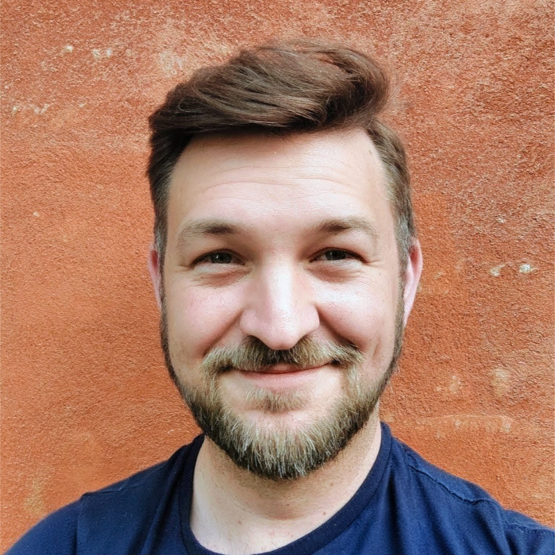

Menschen und Bedürfnisse verstehen
Qualitative und quantitative Erkenntnisse verbinden, Bedürfnisse von Nutzern und Stakeholdern strukturieren und die richtigen Fragen sichtbar machen.
Ich verbinde Nutzerforschung, Prozessanalyse und strategische Fragestellungen. Aus komplexen Bedürfnissen entwickle ich mit interdisziplinären Teams klare Entscheidungsgrundlagen – für bessere digitale Produkte und Services.
Meine Arbeit kennenlernen
Qualitative und quantitative Erkenntnisse verbinden, Bedürfnisse von Nutzern und Stakeholdern strukturieren und die richtigen Fragen sichtbar machen.
Research, Service Blueprinting und Prozessanalyse zusammenführen, Handlungsoptionen entwickeln und gemeinsam Prioritäten setzen.
Fachliche und technische Perspektiven zusammenbringen, Teams durch Workshops verbinden und Veränderungen auf eine fundierte Grundlage stellen.
Einblicke in meine Projektarbeit
Bestehende Implementierungs-Templates wurden kaum genutzt. Als Research-Lead untersuchte ich die Ursachen sowie Möglichkeiten zur Weiterentwicklung.
Dazu analysierte ich ein Portfolio von 39 Produkten und Geschäfts- und Implementierungsprozesse mit mehr als 16 beteiligten Rollen. Interviews, die Betrachtung der Customer- und Partner-Journey sowie ein Service Blueprint machten strukturelle Schwachstellen sichtbar.
Daraus entstanden ein strategischer Analysebericht und priorisierte Handlungsempfehlungen. Erste Verbesserungen wurden umgesetzt; Erkenntnisse flossen in die Quartalsplanung ein.
Als Research-Lead begleitete ich die Exploration einer neuen Produktchance im Bereich Workflow-Automatisierung – in enger Zusammenarbeit mit Product Management und Design Lead.
Explorative Forschung, Anforderungsanalyse, Co-Creation und Konzeptvalidierung halfen, Anforderungen für verständliche automatisierte Abläufe zu konkretisieren.
Wesentliche Beiträge betrafen Testmodus, Benachrichtigungen, Templates und die Unterstützung beim Erstellen automatisierter Workflows. Zentrale Anforderungen flossen in den MVP ein.
Ich bin [Dein Name]. Meine Erfahrung als Senior UX Researcher bei DocuWare und Personio sowie als UX Researcher bei Travian Games verbindet fundierte Nutzerforschung mit Produktstrategie, Prozessfragen und bereichsübergreifender Zusammenarbeit.
Ich strukturiere komplexe Fragestellungen, mache Bedürfnisse und Zusammenhänge verständlich und erarbeite mit anderen Fachbereichen fundierte Handlungsoptionen. Dabei gehören Interviews, Prozessanalysen, Service Blueprinting und die Moderation interdisziplinärer Workshops zu meiner bisherigen Arbeit.
Mein nächster Schritt führt in strategischere Aufgaben rund um digitale Transformation, Prozessmanagement und Organisationsentwicklung. Ich möchte Veränderungsinitiativen fachlich begleiten und dazu beitragen, dass aus Erkenntnissen tragfähige Entscheidungen werden.
Besonders interessieren mich Digitalisierung mit gesellschaftlichem Nutzen und der öffentliche Sektor.
Über Research, Prozesse und die nächste digitale Veränderung. Ich freue mich auf den Austausch über passende Aufgaben und gemeinsame Perspektiven.
E-Mail-Adresse anonymisiert